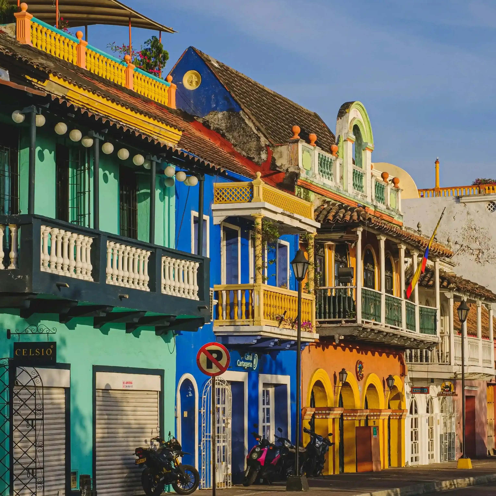

Descubre Bolívar
El departamento de Bolívar, con su capital Cartagena de Indias, es uno de los destinos turísticos más importantes de Colombia y del mundo. Cartagena es reconocida por su Ciudad Amurallada, declarada Patrimonio de la Humanidad por la UNESCO.
Además de su historia y arquitectura colonial, Bolívar ofrece playas paradisíacas, islas caribeñas y una rica tradición cultural y gastronómica.
Historia y Patrimonio
Bolívar es símbolo de la historia colonial y de la independencia de Colombia. Cartagena conserva fortalezas, murallas y calles llenas de vida y color.

Playas y Naturaleza
El departamento ofrece islas y playas espectaculares como Barú, Islas del Rosario y la costa cartagenera, perfectas para el descanso y el turismo ecológico.
¡Contáctanos!